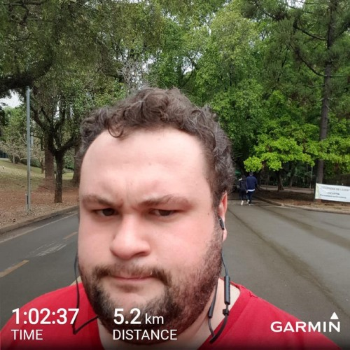
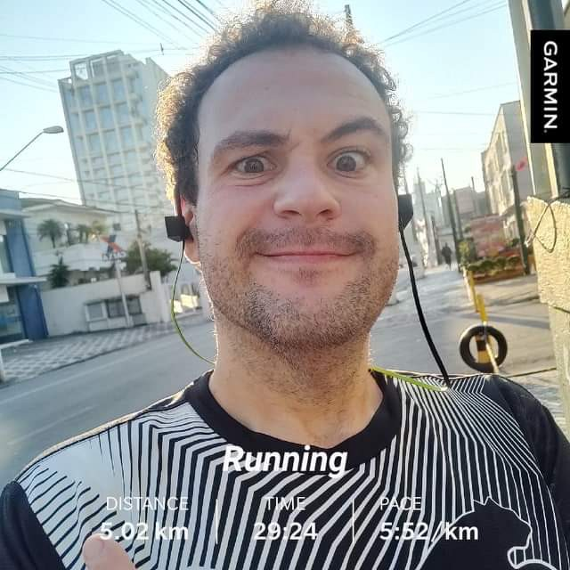

Bruno Gurgel
May 25, 2020
True Acceptance
The journey of constant learning
It’s been almost 2 year that I decided to give myself a different life. Not a life with limitations, or without the things that gives me most pleasure, materially and spiritually, but a life full of awareness, seeking my true purposes.
I never gave personal habits truly importance. In every single aspect, I didn’t have time to stop what I was doing to plan, think or even understand the colateral effects of my daily actions. My life was somehow in its autopilot when I was just paying around careless with the things I enjoyed most.
Studying was something that I always liked and spent a good amount of time, what gives me further the opportunity to connect with great jobs positions, in dream places witch enables me to become a bit workaholic, focused in learn more and always seek for a better financial compensation. Can’t complain, I had a great life with good friends, an amazing job, but in silent, things were day by day getting out of its balance.
Don’t get me wrong, compensation it’s truly important and in 2018, I was able to afford a good gym, a personal trainer, and any kind of sport that requires some money to practice. I always liked sports. I just was never ready to practice, I didn’t have the correct size to be in a surf/skateboard, or the right shape to not be ashamed for a functional training in the park, or even enough breath to run or ride a bicycle for 20 minutes. Despite I liked the ideia of a health life, I was never ready for it, with many health limitations, unstable mood, or personal excuses, by some reason I was never up to nothing.

Several bad habits was deeply developed by me during this years, like sleep 3–4 hours only daily, what drove me to subconscious habits like eating to avoid sleep. Sleep is part of our life, and our body demands us to recharge it a proper amount of time, by ignoring this, I was in-fact developing many other bad habits that drove me to some kind of vicious circle. Not only eat to not fall asleep using candies or popcorn, but I was always tired, with lack of motivation and going by car to the near bakery.
It took me too long to understand that my financial independence and the things I’ve focused most was in a very different path than my health. My work-life harmony was broken. I was such in a wrong path that was no easy action to re-balance it and maybe looking at this text, seams quite obvious, there was lack of sustainability in my life style and I would reach a colapse soon. Unfortunately it was not as simple as I’m writing, colapse it’s not a toll that you can see bigger and better when its closer when you are in autopilot, colapse arrives much more like a train with no lights but with a 125dB horn that scary you out of you own body. I was in a way longer vicious circle with a huge lack of awareness of my own body, lifestyle and habits.
As was expected, for the universe but not for me, living more than 30 years with conscienceless habits drove me to a soft colapse. A man with 30 year old with pre-diabetes, high pressure, chest pains, eating badly and finally experiencing a bad year at work was finally realized that something was wrong and maybe I was late to react. Physically not ready to have mental and spiritual problems and not mentally and spiritual ready to handle physical issues. It’s fair if you call this a soft colapse, but I was terrified not about the situation itself, but about the power of the lack of awareness that I had with my own actions. How could I be so careless during 30 years?
As I was scared, I decided to see few doctors, I was starting to develop some awareness of what have been happening, what should I possibly do, and if it was reversible. Could I get my life back, fix all the problems, start over? After a few blood tests and other exams it was cristal clear that the lack of sustainability so far drove me to a very delicate situation, the doctor says that I had a few more years of life if I insist in keep at this same pace.
Numbers on the blood test showed that almost all my important blood indicators was bellow the right levels or totally above witch you can imagine my sugar indicators was 11x higher than the average. I have been graded with a metabolic age of 70 years man, colapse was becoming clear after every single exam or doctor appointment. As a geek, I was disappointed to not gave attention to my body data for such a long time. 179,6 Kilos was my weight when I started this process.
Life is what it is, situation was placed, I messed up, and at the time it would requires several actions. Actions like a delicate surgery, many medications, routine appointments with doctors for the rest of my life, and a strong habits change. I was stubborn all my life, I used to say that my psychologist could be a friend in the pub, drinking a beer, I barely never give the true importance of routine exams. It requires me many days of deep thinking to truly accept how wrong was I.
Acceptance may be misunderstood here. As I was in autopilot mode, with the “I have no time excuse” on, I was unable to understand what could be good or bad for me, my silent beliefs was droving my life without any moderation, so I could not see things clear. I had to disarm myself of all my shields, that was important barriers of my interaction with people that may help me, co-workers, friends and family. By doing that, I started an endless journey of learning. Learning from others, learning from my body needs, learning from my past and future actions giving away all the silent beliefs and exchange than to abundance.
I had to do many things to get me out of this delicate situation, hard and soft, fast and slow, medications and surgeries, ashamed or proud, but with my heart always open and with high levels of awareness in my acts. Today I’m sure that I’ll be learning for the rest of my life and I’m sure all that I’ve been thru could not be done without true acceptance.
